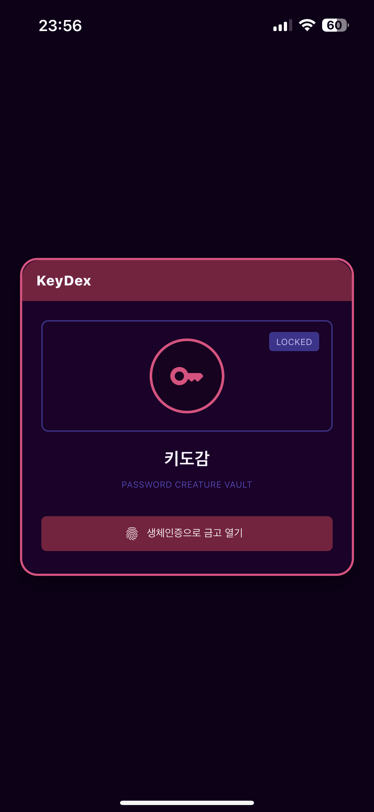
1. 모바일 앱 실행 및 금고 열기
KeyDex 앱을 실행한 뒤 생체인증으로 금고를 엽니다.
금고가 잠긴 상태에서는 계정 조회, QR 승인, 비밀번호 복사 같은 민감 기능을 사용할 수 없습니다.
KeyDex는 스마트폰 금고를 중심으로 계정을 저장하고, 크롬 확장 프로그램의 QR을 통해 PC 로그인과 계정 저장을 연결합니다.
이 문서는 현재 프로젝트 상태와 제공된 화면 이미지를 기준으로 최초 설치, PC 기능, 스마트폰 기능을 정리한 메뉴얼입니다.
KeyDex는 폰 앱에 계정 정보를 보관하고, PC 확장 프로그램은 QR 세션을 만들어 폰의 승인을 기다리는 구조입니다.
처음에는 모바일 앱 잠금 해제와 크롬 확장 프로그램 설치, 그리고 폰 페어링을 한 번 진행해야 합니다.

KeyDex 앱을 실행한 뒤 생체인증으로 금고를 엽니다.
금고가 잠긴 상태에서는 계정 조회, QR 승인, 비밀번호 복사 같은 민감 기능을 사용할 수 없습니다.
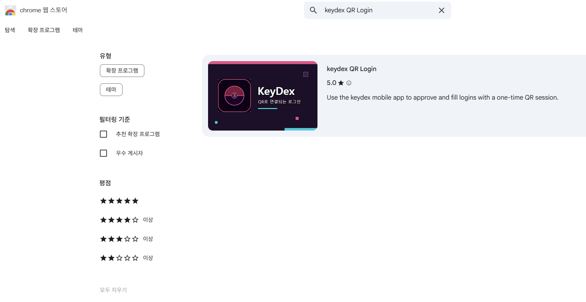
크롬 확장 프로그램 관리 화면에서 keydex QR Login 확장 프로그램을 로드하고 활성화합니다.
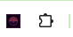
확장 프로그램을 자주 사용할 수 있도록 크롬 툴바에 KeyDex 아이콘을 고정합니다.
이후 웹사이트 로그인 화면에서 이 아이콘을 눌러 QR 로그인과 저장 기능을 시작합니다.
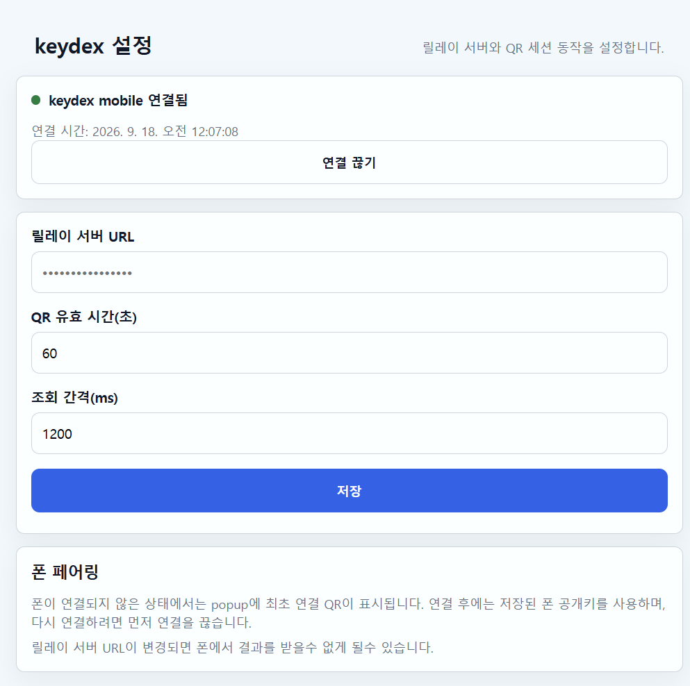
확장 프로그램 설정에서 릴레이 서버 URL, QR 유효 시간, 조회 간격, 자동입력 후 로그인 버튼 클릭 여부를 확인할 수 있습니다.
폰 연결 전에는 상태가 폰 연결 안 됨으로 표시됩니다.
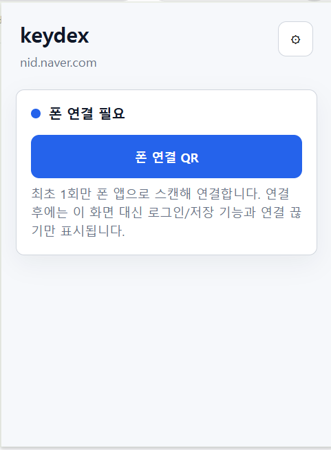
확장 프로그램 팝업에서 폰 연결 QR 버튼을 누르면 최초 연결용 QR이 표시됩니다.
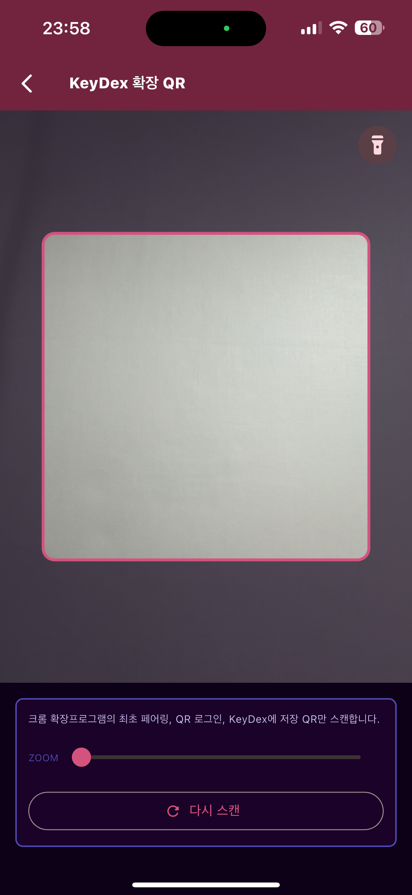
모바일 앱의 QR 스캔 화면에서 크롬 확장 프로그램의 최초 페어링, QR 로그인, KeyDex 저장 QR을 스캔합니다.
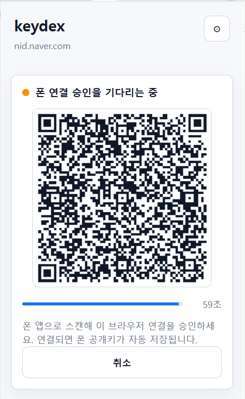
폰에서 승인하면 확장 프로그램은 폰 공개키를 저장하고 연결 상태로 전환합니다. QR 시간이 만료되면 새 QR을 다시 생성합니다.
PC 확장 프로그램은 비밀번호를 직접 보관하지 않습니다.
현재 페이지의 사이트 정보를 기준으로 QR 세션을 만들고,
폰 앱의 승인 또는 선택 결과를 받아 웹페이지 입력란에 반영합니다.
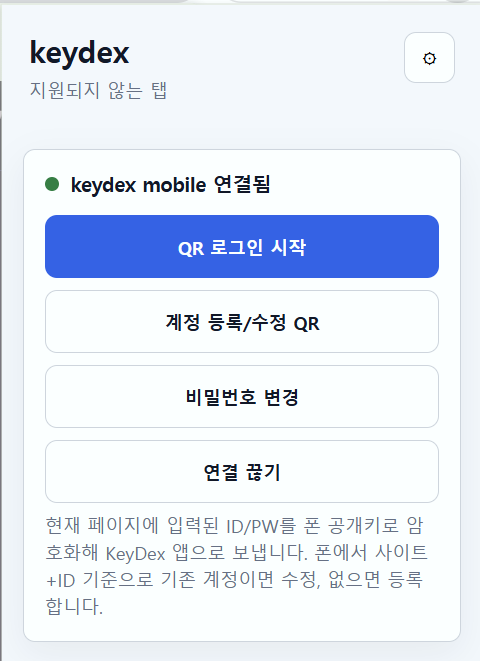
폰 페어링이 완료되면 확장 프로그램 팝업에 QR 로그인 시작, 계정 등록/수정 QR, 비밀번호 변경, 연결 끊기가 표시됩니다.
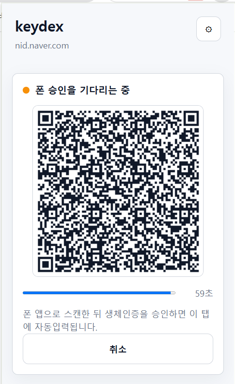
로그인 페이지에서 QR 로그인 시작을 누르면 승인용 QR이 표시됩니다. 폰 앱으로 스캔하고 생체인증을 승인하면, 해당 사이트에 저장된 ID와 비밀번호가 PC 로그인 폼에 자동 입력됩니다.
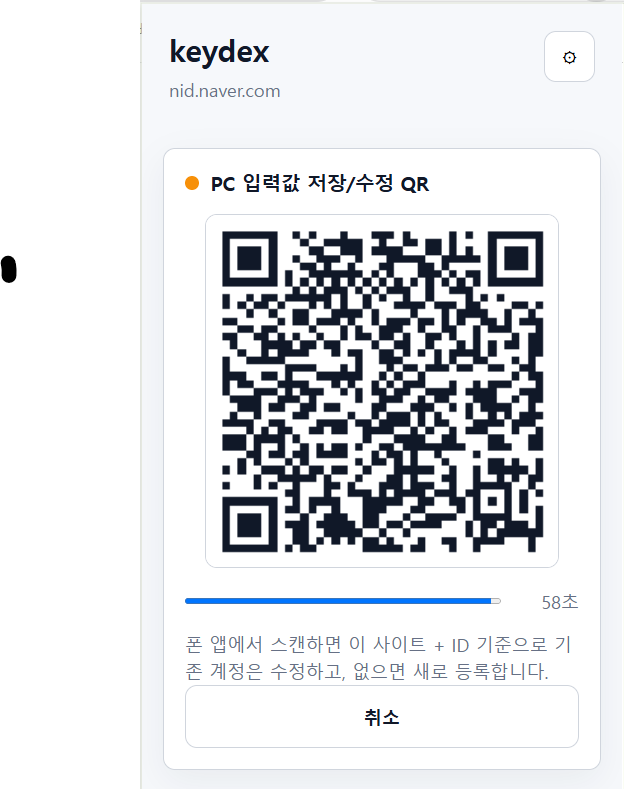
웹사이트의 로그인, 회원가입, 계정 수정 화면에 입력된 ID/PW를 QR로 만들어 폰 앱에 전달합니다. 폰 앱은 사이트와 ID를 기준으로 기존 계정이 있으면 수정하고, 없으면 새 계정으로 등록합니다.
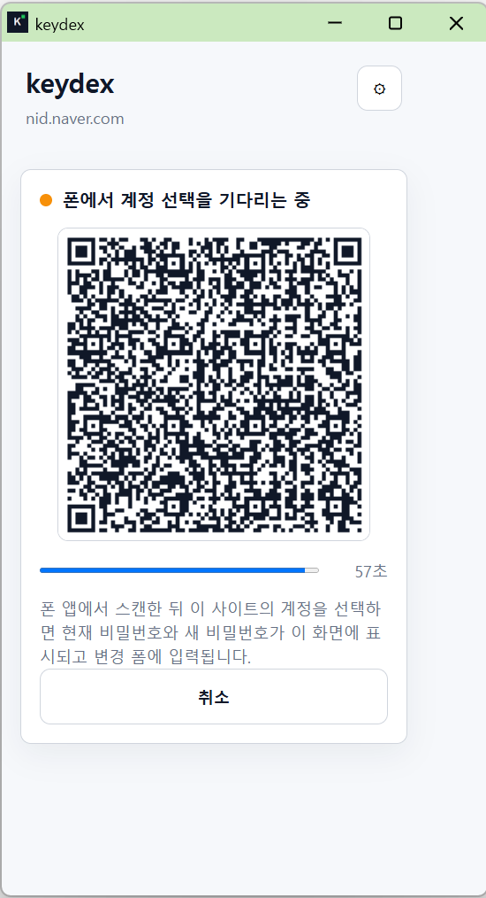
사이트의 비밀번호 변경 화면에서 비밀번호 변경을 누르면 폰 앱이 해당 사이트 계정 선택을 처리합니다. 선택된 계정의 현재 비밀번호와 새 비밀번호가 변경 폼에 입력되는 흐름을 지원합니다.
릴레이 서버 URL, QR 유효 시간, 릴레이 조회 간격, 자동입력 후 로그인 버튼 클릭 옵션을 조정합니다. 폰 연결을 다시 해야 하는 경우에는 먼저 기존 연결을 끊고 새 연결 QR로 페어링합니다.
| 기능 | 사용 위치 | 처리 방식 | 주의사항 |
|---|---|---|---|
| QR 로그인 | 로그인 페이지 | 확장 프로그램 QR 생성, 폰 승인, 릴레이를 통한 암호화 응답 수신 후 입력 | 폰 페어링과 릴레이 URL 설정이 필요합니다. |
| 계정 등록/수정 QR | 로그인, 회원가입, 계정 수정 화면 | PC 폼의 ID/PW를 QR로 전달하고 폰 앱에서 최종 저장 | 사이트와 ID 기준으로 신규 등록 또는 기존 수정이 결정됩니다. |
| 비밀번호 변경 | 비밀번호 변경 화면 | 폰에서 계정을 선택하고 변경 폼에 필요한 값을 입력 | 사이트별 폼 구조 차이로 수동 확인이 필요할 수 있습니다. |
| 연결 끊기 | 확장 프로그램 팝업, 앱 설정 | 저장된 페어링 공개키와 연결 상태 삭제 | 다시 사용하려면 최초 페어링 QR을 새로 스캔합니다. |
스마트폰 앱은 KeyDex의 기준 저장소입니다.
계정 목록, 사이트별 로그인 정보, QR 승인, 비밀번호 복사,
자동완성 설정, 로컬 DB 확인 메뉴가 모두 폰 앱을 중심으로 동작합니다.
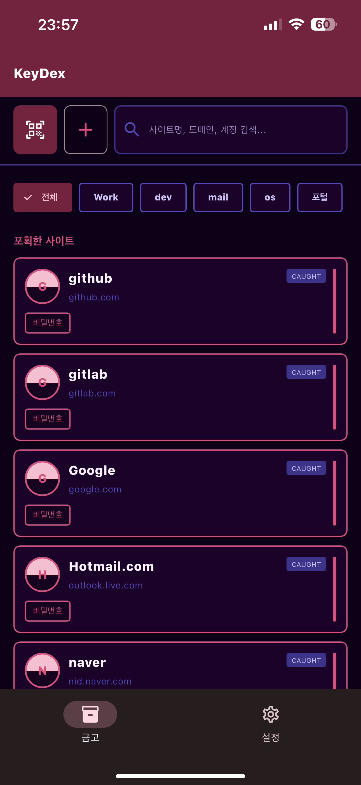
금고 화면에서는 저장된 사이트를 목록으로 확인하고, 사이트명, 도메인, 계정 기준으로 검색할 수 있습니다. 카테고리 칩을 이용해 업무, 개발, 메일, OS, 포털 등으로 빠르게 필터링합니다.
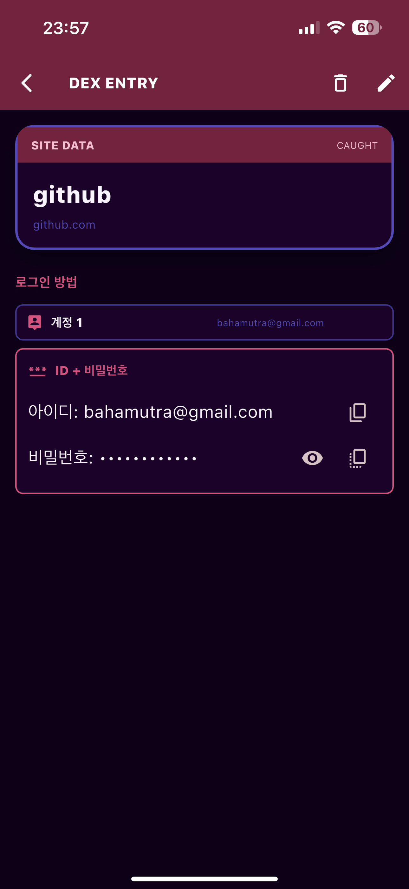
사이트 상세 화면에서 계정 ID와 비밀번호를 확인합니다. 비밀번호는 기본적으로 마스킹되며, 필요한 경우 표시하거나 클립보드에 복사할 수 있습니다.
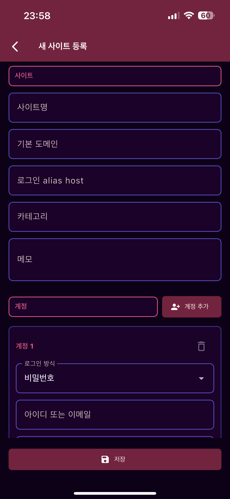
새 사이트 등록 화면에서 사이트명, 기본 도메인, 로그인 alias host, 카테고리, 메모를 입력합니다. 하나의 사이트에 여러 계정을 추가할 수 있습니다.
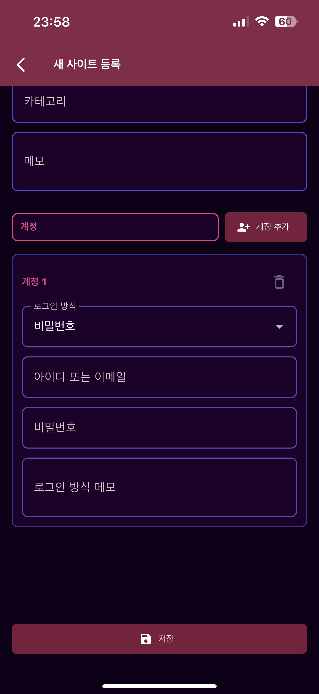
계정 영역에서 로그인 방식, 아이디 또는 이메일, 비밀번호, 로그인 방식 메모를 입력합니다. 저장 후 금고 목록과 QR 로그인 후보로 사용할 수 있습니다.
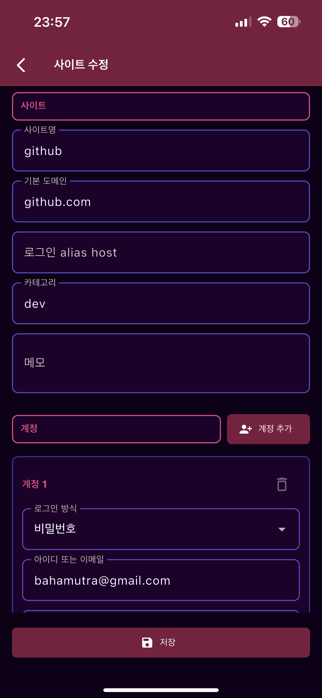
기존 사이트의 이름, 도메인, alias host, 카테고리, 메모를 수정할 수 있습니다. 도메인 정보는 QR 로그인과 자동완성 매칭에 사용되므로 실제 로그인 도메인 기준으로 관리합니다.
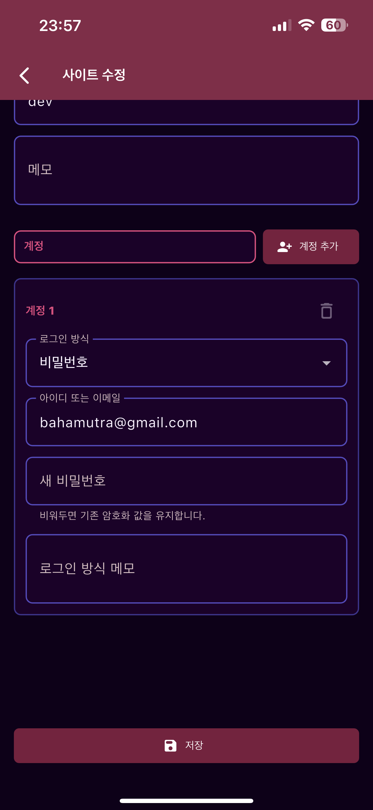
계정의 아이디와 비밀번호를 수정합니다. 기존 계정 수정 시 새 비밀번호를 비워두면 저장된 암호화 값을 유지하는 흐름을 사용할 수 있습니다.
QR 버튼은 크롬 확장 프로그램과 연동되는 QR만 처리합니다. 최초 페어링, QR 로그인 승인, 계정 등록/수정 QR, 비밀번호 변경 관련 QR을 스캔하는 전용 진입점입니다.
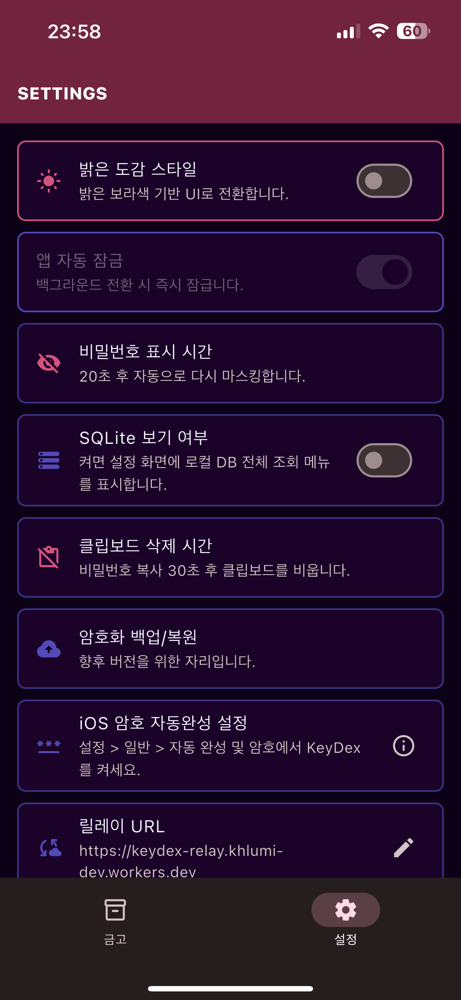
밝은 도감 스타일, 앱 자동 잠금, 비밀번호 표시 시간, SQLite 보기 여부, 클립보드 삭제 시간, 암호화 백업/복원 메뉴를 확인합니다.
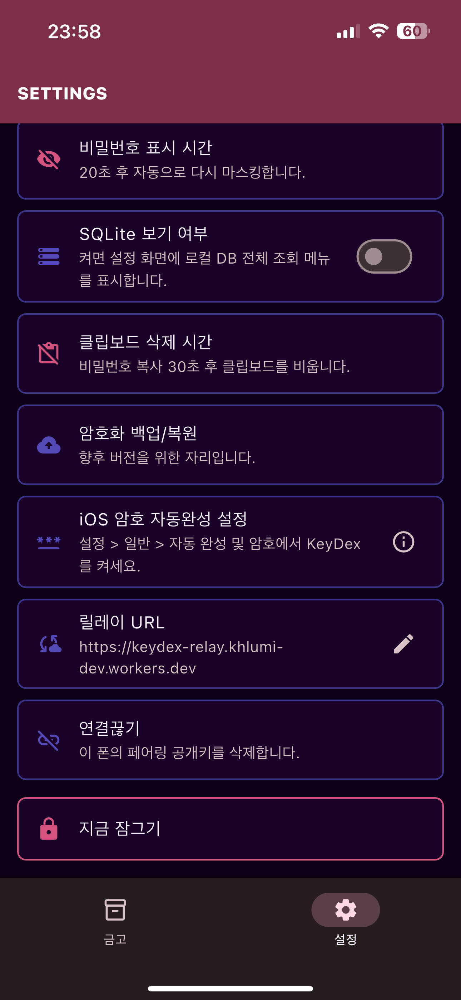
OS 암호 자동완성 설정 안내, 릴레이 URL, 연결끊기, 지금 잠그기 기능을 제공합니다. 폰 페어링을 해제하면 확장 프로그램과 다시 연결해야 합니다.

설정 > iOS 암호 자동완성 설정 을 통해서 iOS 자동 완성 및 암호 설정 화면에 진입합니다. KeyDex 를 선택해주세요.
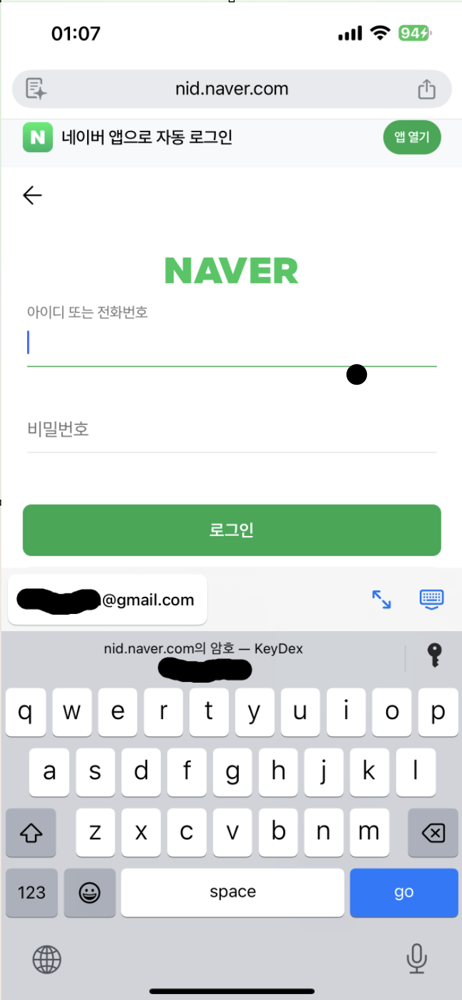
스마트폰에서도 등록된 사이트 로그인 정보를 이용해 ID와 비밀번호를 자동입력할 수 있습니다. iOS에서는 설정에서 KeyDex 암호 자동완성을 활성화한 뒤 Safari나 앱 로그인 화면의 입력란을 선택하면, 키보드 상단에 해당 도메인의 KeyDex 암호 후보가 표시됩니다.
| 기능 | 설명 | 보안 동작 |
|---|---|---|
| 금고 잠금 | 앱 실행 또는 즉시 잠금 후 생체인증으로 금고를 엽니다. | 잠금 상태에서는 저장된 계정과 QR 승인 기능을 사용할 수 없습니다. |
| 계정 관리 | 사이트, 도메인, 카테고리, 여러 계정, 로그인 방식 메모를 관리합니다. | 비밀번호는 네이티브 암호화 계층을 통해 암호화되어 저장됩니다. |
| 비밀번호 보기/복사 | 필요할 때 비밀번호를 표시하거나 클립보드에 복사합니다. | 표시 시간과 클립보드 삭제 시간이 설정값에 따라 제한됩니다. |
| QR 승인 | 확장 프로그램의 페어링, 로그인, 저장/수정 QR을 스캔하고 승인합니다. | 중요 동작은 폰 생체인증과 사용자 확인을 거쳐 진행합니다. |
| OS 자동완성 | Android AutofillService와 iOS Credential Provider 기반으로 스마트폰 로그인 화면에서도 저장된 계정 후보를 표시합니다. | 도메인 또는 앱 패키지 매칭 후 사용자가 KeyDex 후보를 선택해야 입력됩니다. |
| SQLite 보기 | 설정에서 SQLite 보기 여부를 켜면 로컬 DB 전체 조회 메뉴를 표시합니다. | 조회 전용이며 저장된 암호화 값은 복호화하지 않고 DB 기록 그대로 표시합니다. |